| 日付 | 2011年10月28日（金） |
|---|---|
| 山域 | 奥秩父 |
| メンバー | 家族（妻、長女・0歳） |
| 山行形態 | 子連れ日帰り |
| アクセス | 車 |
| ルート (Map) | 西沢渓谷入口→三重の滝→七ツ釜五段の滝→西沢渓谷入口 |
久しぶりに休暇を取ったので、出かけることにする。
せっかく平日に出かけるので、目的地は休日には混雑しそうな西沢渓谷にする。
関東では非常に名高い渓谷で、四季折々の景観が楽しめる。
今の時期は紅葉が真っ盛りのはずだ。
9:05 西沢渓谷入口の駐車場に到着。
一つ先の駐車場はすでに満車だった。
駐車場からは鶏冠山が真正面に見えている。
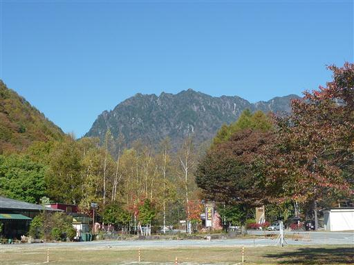
西沢渓谷に向かって歩道を歩いていく。
この道は以前、甲武信ヶ岳に登った時に歩いた道だ。
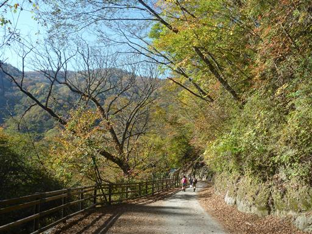
不思議な形のトイレが建っている。
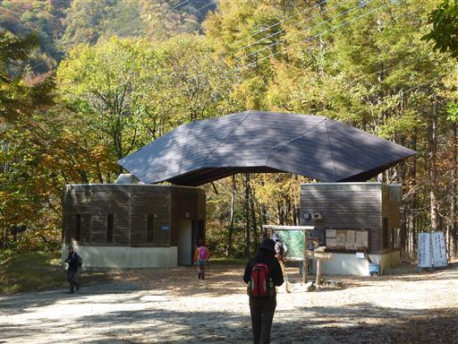
西沢山荘に到着。もうすでに廃業していて無人だ。
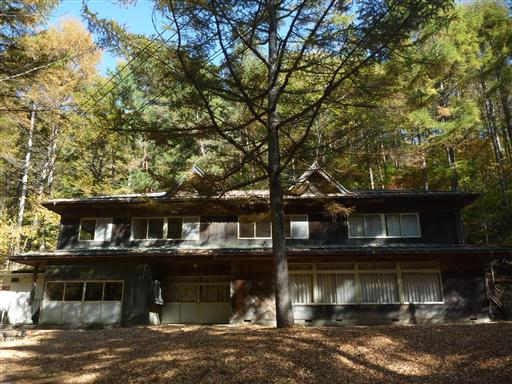
今日も重い荷物を背負って沢沿いの道を歩いていく。登りはあまり無いので助かる。
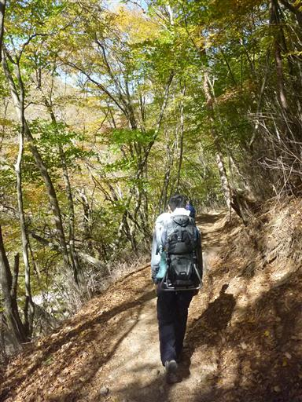
沢を挟んだ対岸の斜面は紅葉に彩られている。
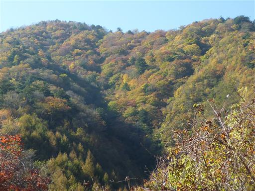
吊橋で沢を渡る。この辺りは西沢と東沢の合流地点だ。
東沢は甲武信ヶ岳に通じていて、沢登りをする人たちに親しまれている。
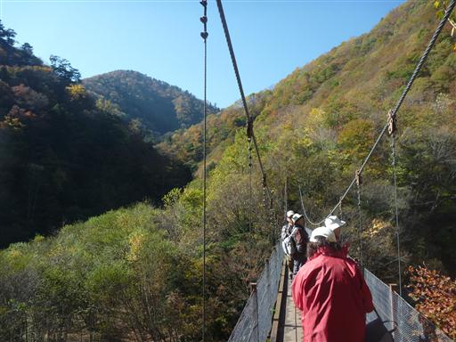
吊橋からは鶏冠山が望める。
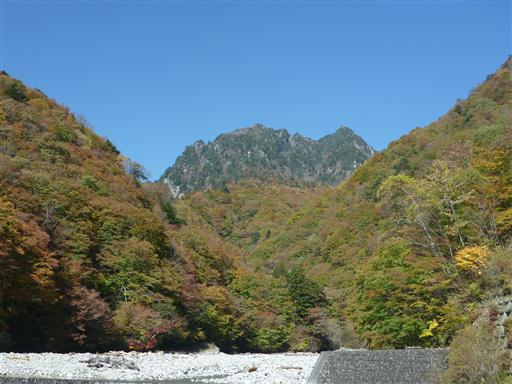
しばらく進むと、鶏冠山への分岐が現れるが、その先には進入禁止と書かれている。
鶏冠山は少々グレードが高いのだが、いつかは行ってみたい山だ。

付近は木々が赤や黄に彩られて非常に美しい。
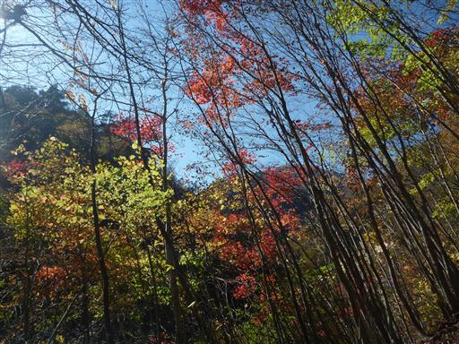
眼下に、一番最初の滝、大久保の滝が見えてくる。
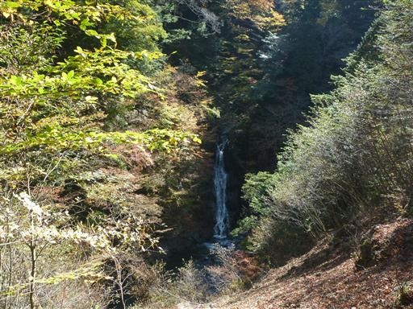
続いて、三重の滝。小さな滝が3段続いている。
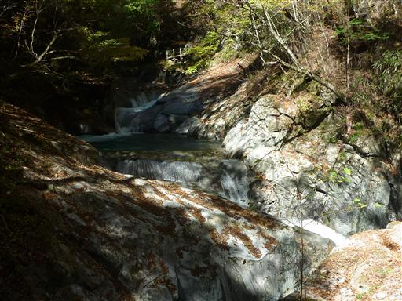
川の淵は驚くほど深い緑色だ。このような美しい色になるのは鉱毒の影響らしい。
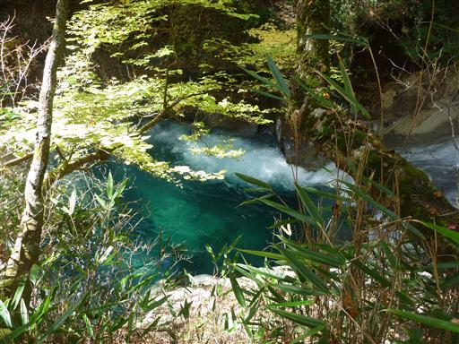
渓谷沿いに付けられた遊歩道を歩いていく。平日なのにそれなりの人出だ。
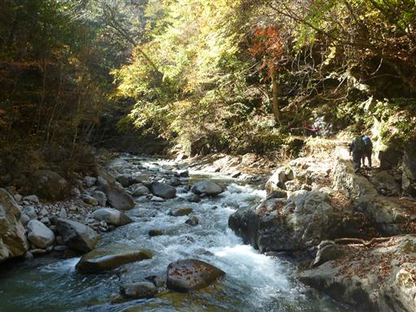
フグの形をしたフグ岩。
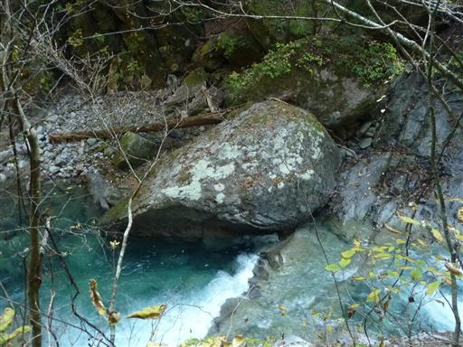
天気の良い平日のためか、大きなカメラを抱えた人も多く見かける。

陽が当たると紅葉がよく栄える。
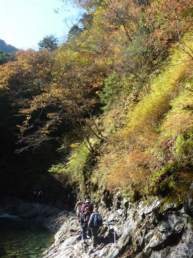
竜神の滝。丸い釜が連続する美しい滝だ。
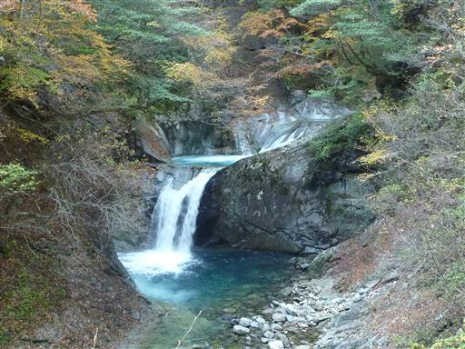
恋糸の滝。一筋の細い滝。
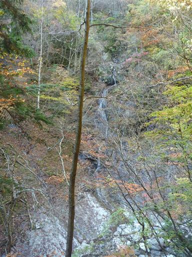
貞泉の滝。滑らかな岩の上を水が滑り落ちている。
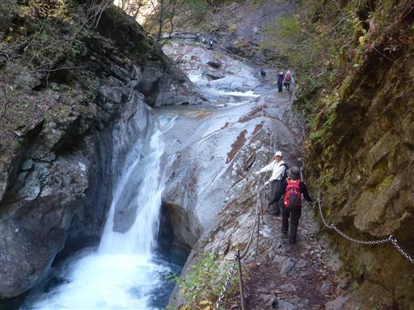
激しく流れ落ちる渓流の側を歩いていく。
岩はあまりぬめっていないので、比較的安心して歩ける。
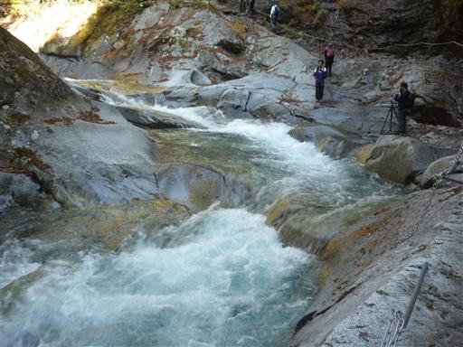
上を見上げると鮮やかな紅葉が広がっている。
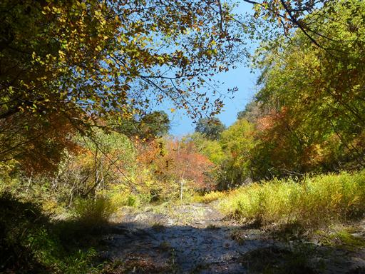
母胎渕。水の流れが作ったと思われる穴がぽっかりと空いている。
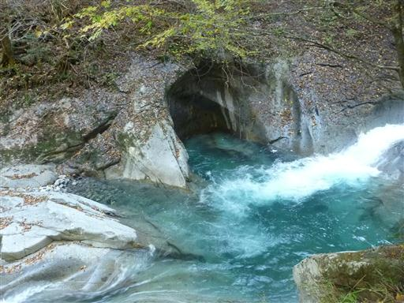
沢が少し広くなり腰を下ろせそうな岩が現れたので、昼食をとることにする。

沢に近く景観も良い、なかなかの休憩スポットだ。
激しく流れ落ちる水の音がうるさいくらいだ。
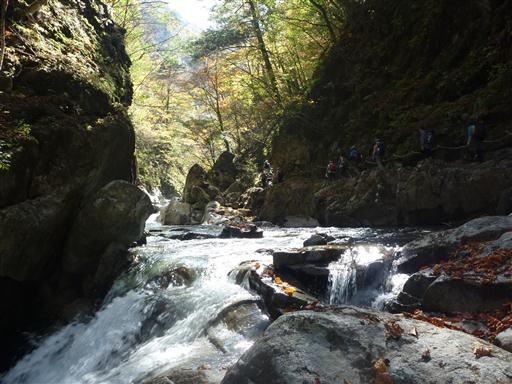
方丈橋を通って西沢を渡る。この橋は2011年9月に架け替えられたばかりの、真新しい橋だ。
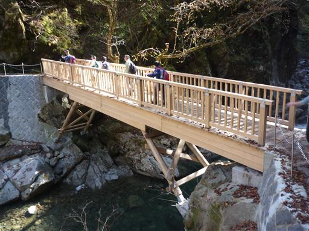
七ツ釜五段の滝。西沢渓谷の見納めとなる滝だ。見えているのは三釜二滝。
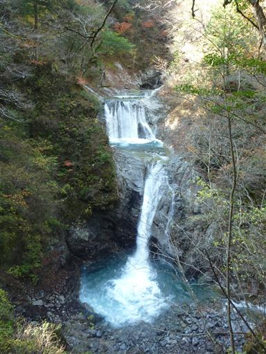
続いて上流部に釜と滝が連続している。本日のクライマックスにふさわしい美しい滝だ。
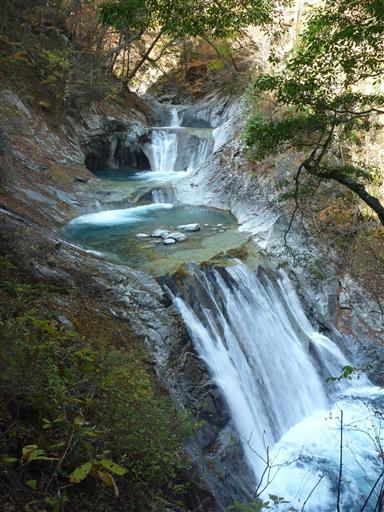
西沢渓谷の最上流部分。ここから先、遊歩道は設けられていない。
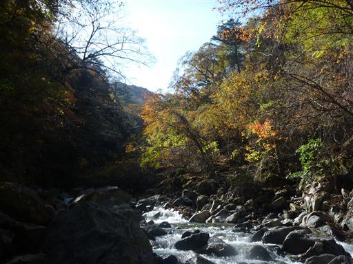
帰りは右岸に付けられた遊歩道を使って戻る。沢から離れてしばらくは木段を登る。
この辺りはシャクナゲの群生地だ。
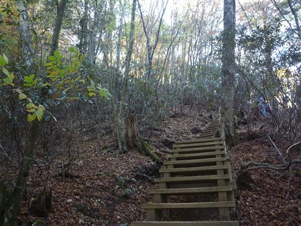
登りついたところは休憩所になっていて、多くのハイカーが休んでいる。
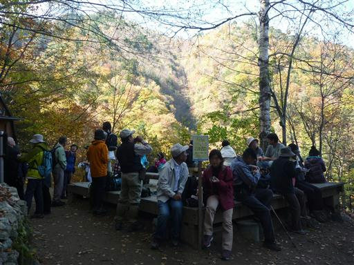
ここからの道はトロッコ軌道跡で、ところどころレールが顔を出している。
昭和8年から昭和43年まで使われたものらしい。
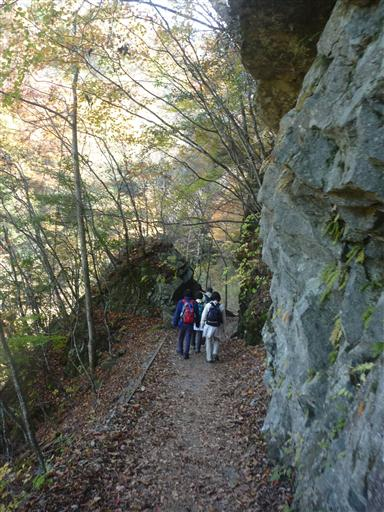
43号橋を渡る。43個もあったかどうかは定かでないが、これからこのような橋を多く渡る。
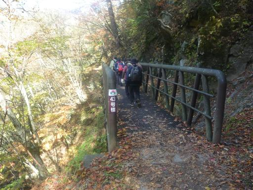
遥か眼下に七ツ釜五段の滝が見えている。
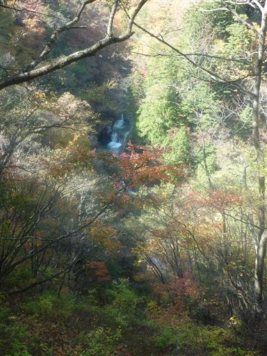
大展望台に到着。左に見えるのが鶏冠山。
右に見えるのは甲武信ヶ岳かと思ったら、案内標識には木賊山と記載されていた。
甲武信ヶ岳はその奥にあるらしい。
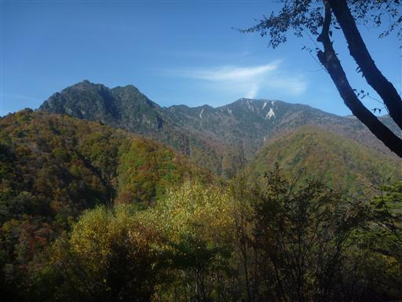
かつて使われていたトロッコの模型が置かれている。
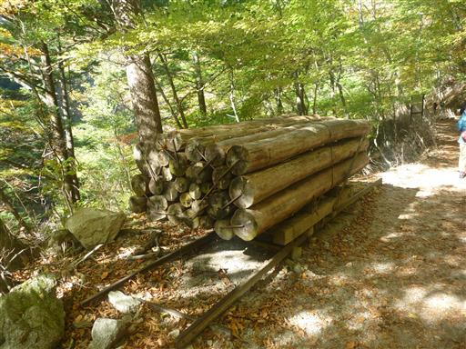
大きな橋を渡ってもと来た道に合流する。白く輝く河原が美しい。
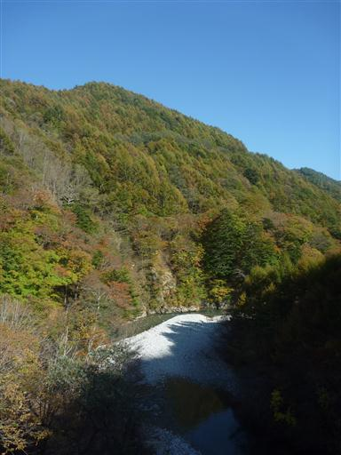
赤黄緑とグラデーションが美しい紅葉。
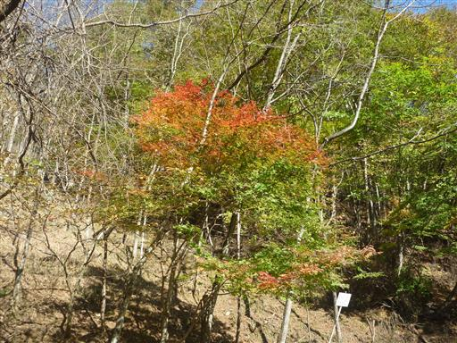
14:28 駐車場に戻ってくる。朝来た時より車の数は増えている。
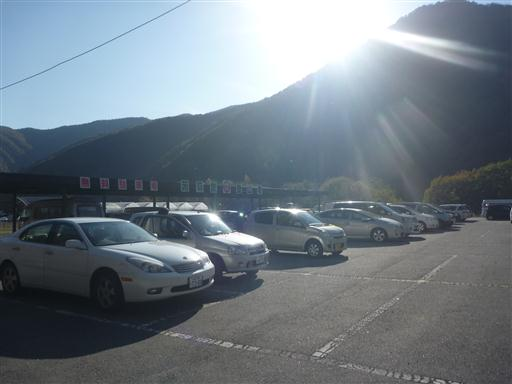
せっかく山梨まで来たのだし、天気も良いので紅葉台に寄り道してから帰ることにする。
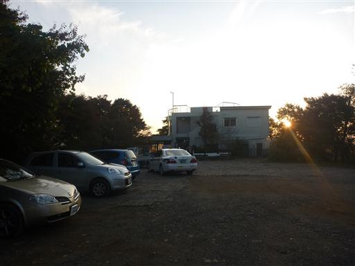
紅葉台の展望台は有料だったので、けちって三湖台に移動。駐車場から10分程度だ。
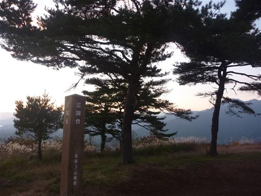
ちょうど陽が沈んでいくところだ。
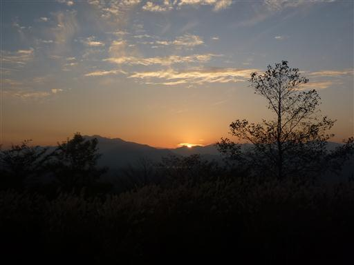
ここは富士山のビューポイント。間近に大きな富士山が望める。
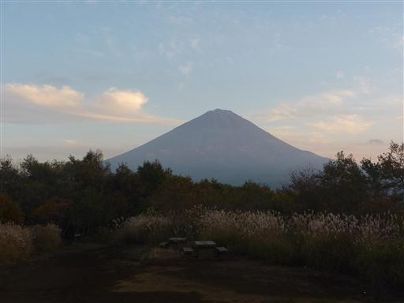
暮れ行く景色を眺める。眼下に広がるのは富士の樹海、遠くの稜線は南アルプスだ。
沢と山、美しい景色が広がる山旅だった。
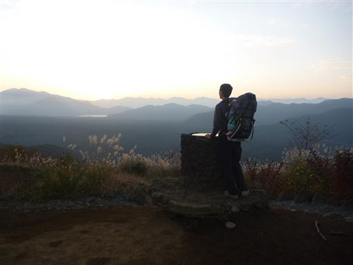